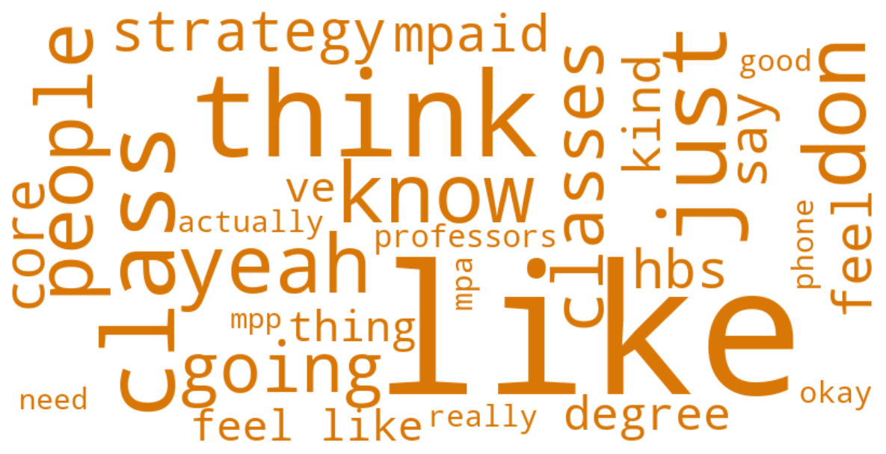

MIXED Focus Group
134 student turns · Mean sentiment: 0.45
134
Student turns
7594
Total words
0.45
Mean sentiment
Sentiment Arc
Emotional trajectory through the MIXED focus group session. Hover over points to read actual quotes.
Distinctive Vocabulary

Top Themes
Core Curriculum: Structure, Flexibility, and Program Identity
"It's hard to have intentionality when you don't have any core. Most people actually don't know where they're going and they end up with a hodgepodge of classes that don't really align in any way."
Norm Enforcement & the Rules Gap
"If someone walks in late, the teacher should say, this is your warning. The next class, get out. You're late. It's just establishing that if you cross this line, there's going to be a repercussion. Th..."
Participation Grades vs. Class Size: A Structural Tension
"Classes way too big. 80-90 people, and a 40 to 50 percent participation grade. People feel like they need to talk, but you can't have a conversation amongst a hundred people."
Teaching Quality & Faculty Investment
"From a professionalism standpoint, HKS is head and shoulders above the design school, where nobody pays attention in class whatsoever."
Cold Calling
"make a comment kind of to this like calling out"
Student Professionalism & Classroom Culture
"I don't know if I can say I am a public administration professional."
Feedback & Assessment: Timing, Quality, and Accountability
"A hundred percent. And I think that's key because a lot of times at HKS, like the TF or the CA or the review at the end for the final, it's like big picture. Like what have we done? And I'm like, wow,..."
Distinctive Keywords
like
think
class
just
don
know
yeah
people
classes
going
strategy
core
hbs
say
feel
mpaid
kind
degree
feel like
ve